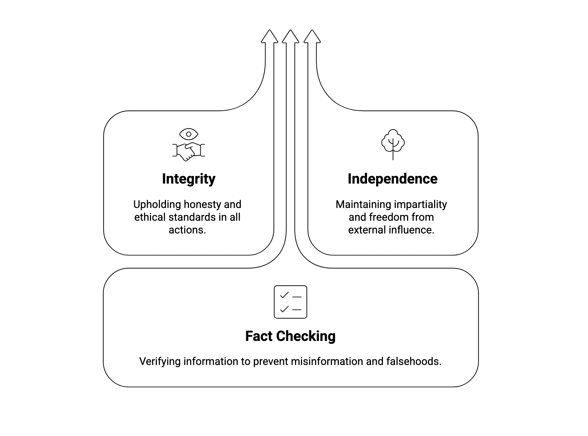

Integrity services include independent fact checking.
Fact checkers are vetted and have passed a known answer test.

Information is de-anonymised and fragmented to then input to the fact checkers. Outputs are then sworn and affirmed in legal format to admit to a court of law.
Anti-fraud processes require independence, democracy and honesty.

In search for truth, collective opinions form implicit objective information.

Courts we service